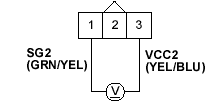

DTC P0123: TP Sensor Circuit High Voltage
- Turn the ignition switch ON (II).
- Check the throttle position with the scan tool.
Is there about 10% or 0.5 V when the throttle is fully closed and about 90% or 4.5 V when the throttle is fully opened?
YES - Intermittent failure, system is OK at this time. Check for poor connections or loose wires at the TP sensor and at the ECM.
NO - Go to step 3.
- Turn the ignition switch OFF.
- Disconnect the TP sensor 3P connector.
- Turn the ignition switch ON (II).
- At the wire harness side, measure voltage between the TP sensor 3P connector terminals No. 1 and No. 3.
TP SENSOR 3P CONNECTOR

Wire side of female terminals
Is there about 5 V?
YES - Replace the throttle body.
NO - Go to step 7.

- Measure voltage between ECM connector terminals A10 and A20.
ECM CONNECTOR A (31P)

Wire side of female terminal
Is there about 5 V?
YES - Repair open in the wire between the ECM (A10) and the TP sensor.
NO - Substitute a known-good ECM and recheck (see page 11-5). If symptom/indication goes away, replace the original ECM.